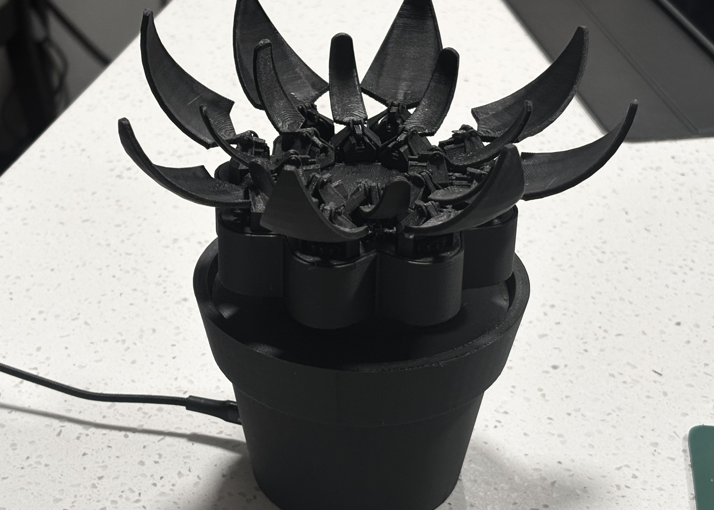
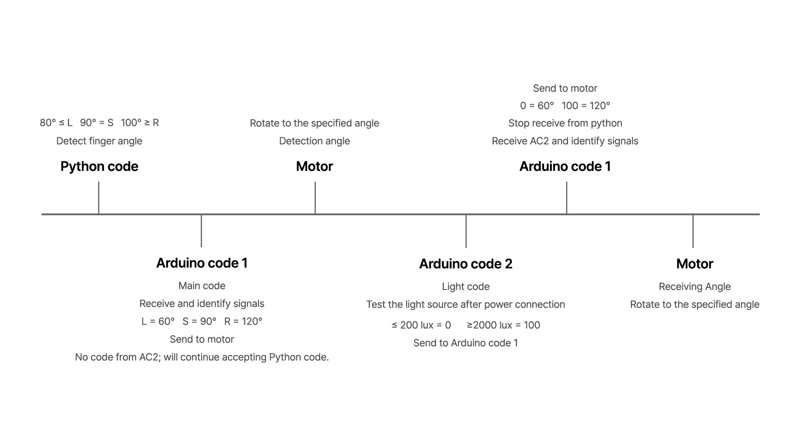
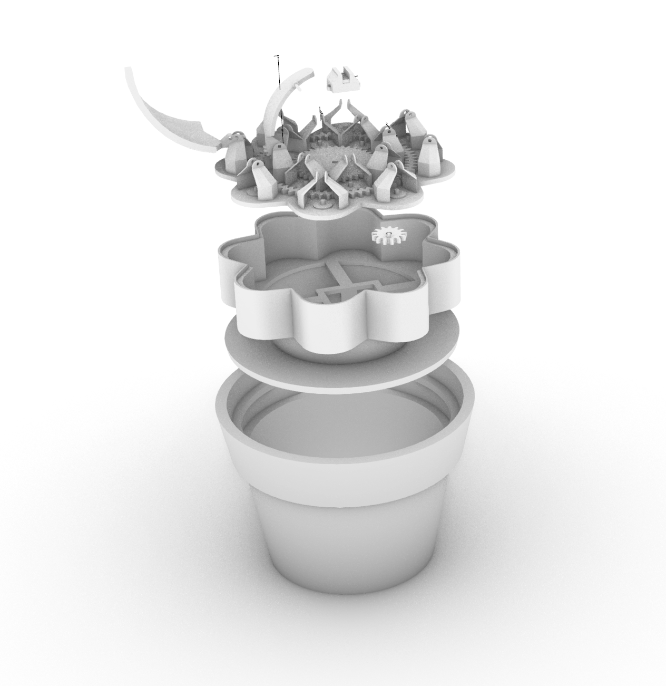
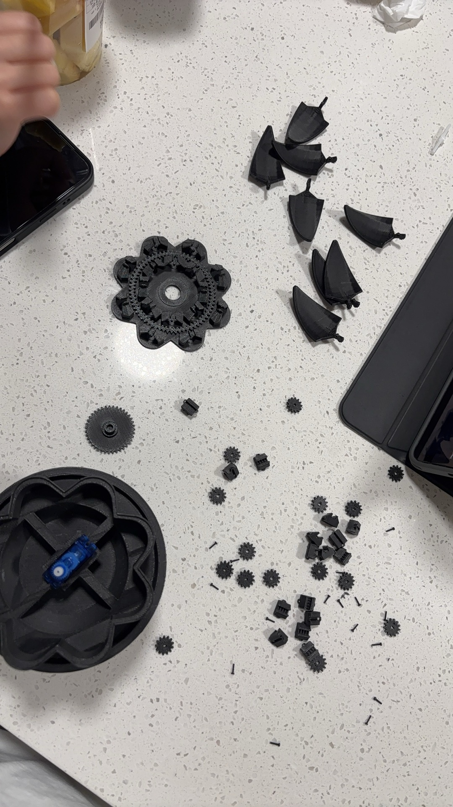
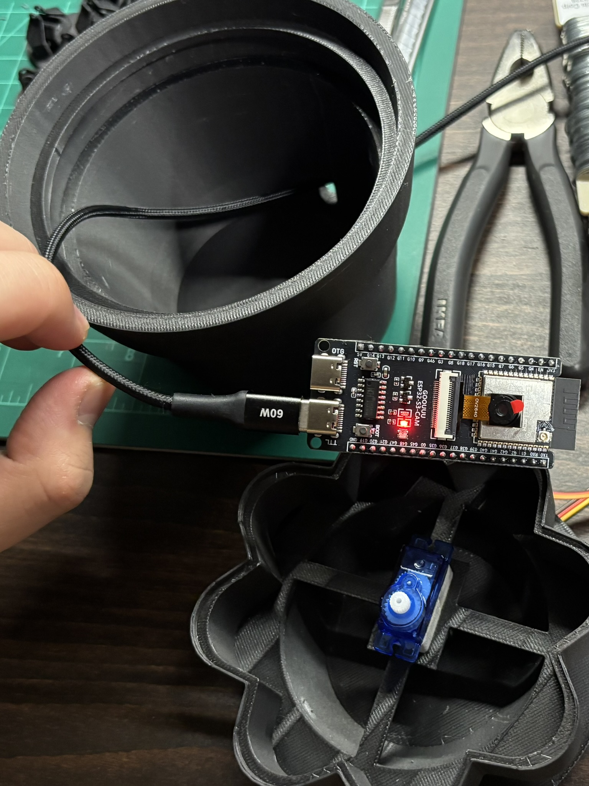
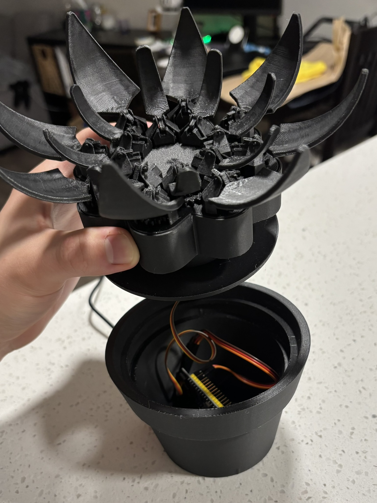
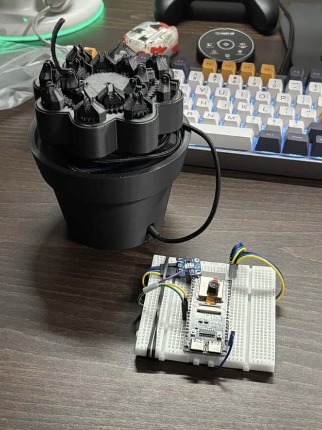

Gesture Input
Python-based gesture recognition captures user hand movement and sends motion values to the control system when the prototype is running in gesture mode.

A responsive mechanical object that uses gesture input, light sensing, and motor-driven motion to simulate the opening and closing cycle of a flower.
Mechanical Flower is a physical computing prototype that explores how mechanical behavior can simulate a life-like response. The object can react to either hand gesture input or ambient light and translates that input into the opening and closing motion of a flower.
The project combines ESP32 control, motor actuation, light sensing, gesture recognition, Arduino and Python logic, Rhino modeling, and 3D printed parts into one working system. The interaction logic also supports automatic mode switching: when the light sensing component is connected, the system changes from gesture-based input to light-based response.
Python-based gesture recognition captures user hand movement and sends motion values to the control system when the prototype is running in gesture mode.
A light sensor reads ambient brightness and provides environmental input for the flower to open or close in response to changing light conditions.
The system supports two input paths. When the light sensing component is connected, control automatically switches from gesture recognition to light-responsive behavior.

The form was modeled in Rhino and fabricated through 3D printing. The prototype had to balance outer form, internal mechanism, motor space, and wiring layout so the object could function as both a shell and a moving system.


A major part of the project was physical iteration. Printed parts, petal components, and transmission details were repeatedly tested and adjusted to improve movement reliability and structural fit. The current deck documents broken parts, mechanism failures, and later-stage prototype results, which makes this section useful for showing both iteration and final outcome.


